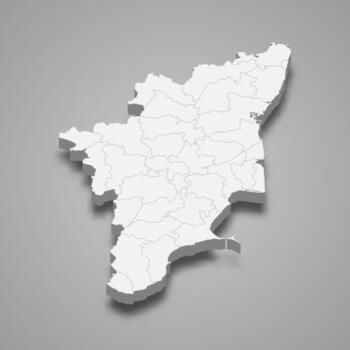

Tamilnadu

- Location: Extreme south of India, bordered by Kerala, Karnataka, Andhra Pradesh, and the Indian Ocean.
- Language: Tamil is the official and classical language, deeply tied to its identity.
- Culture: A vibrant mix of ancient traditions, Dravidian art, music, dance, and literature, with a strong emphasis on heritage.
- Capital: Chennai.
- Heritage Sites: Home to UNESCO World Heritage sites like the Group of Monuments at Mahabalipuram and the Great Living Chola Temples, plus the Nilgiri Mountain Railway.
- Landmarks: Famous for its magnificent temples (e.g., Meenakshi Temple in Madurai), serene hill stations (Kodaikanal), and Kanyakumari, where three seas meet.
- Economy: Progresses while preserving its past, with thriving tourism and cultural industries.